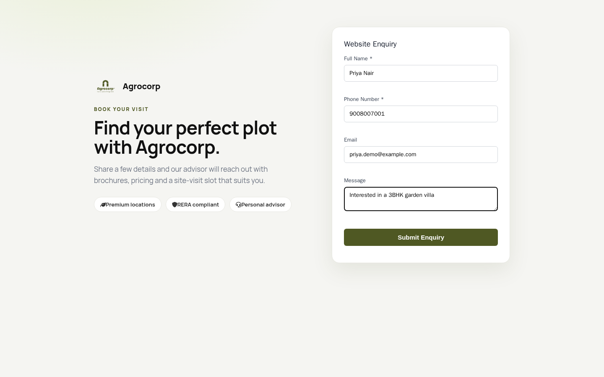
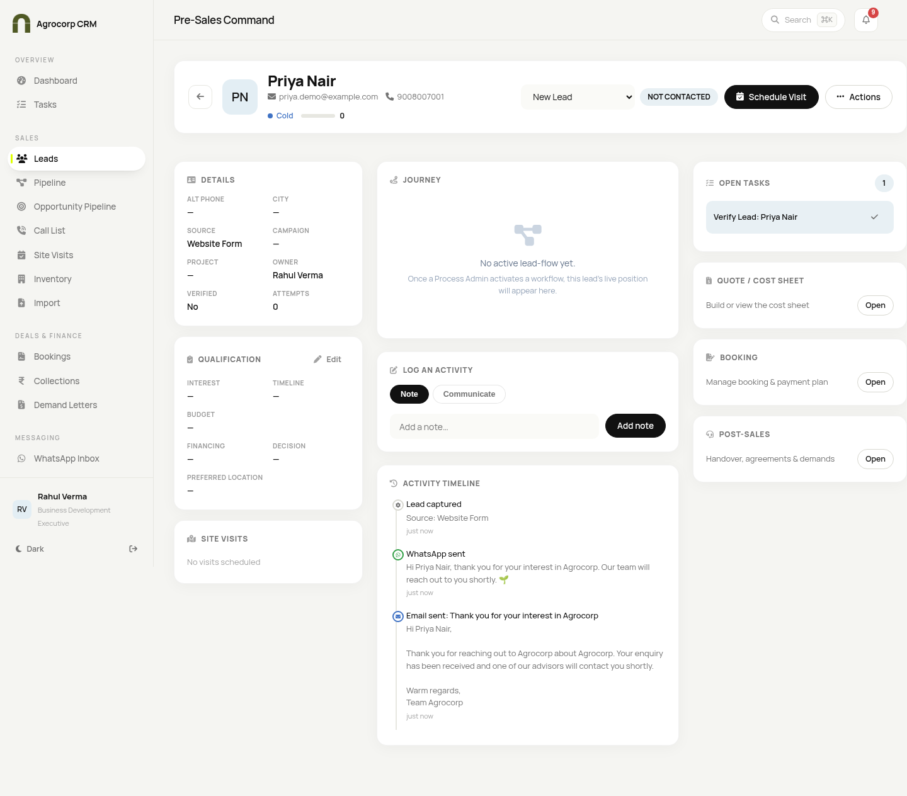
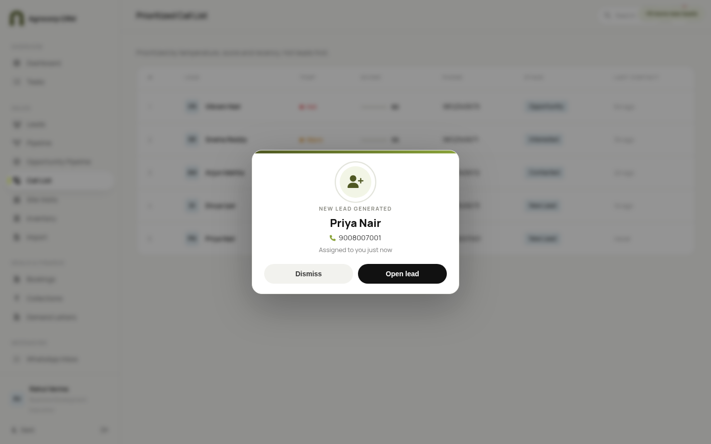
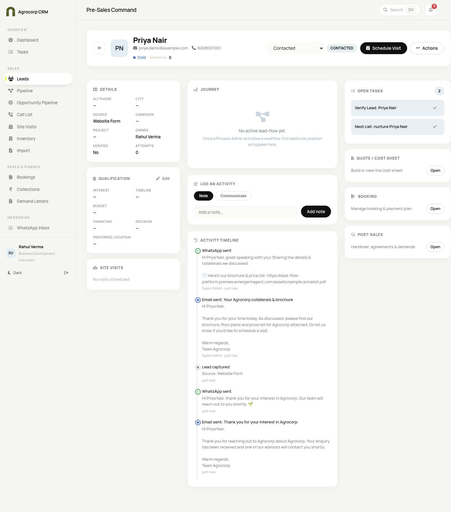
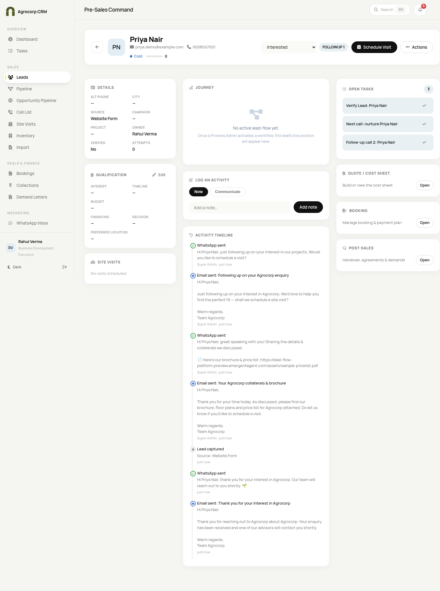
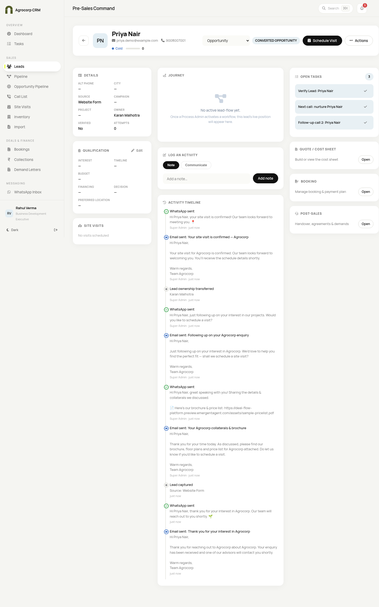
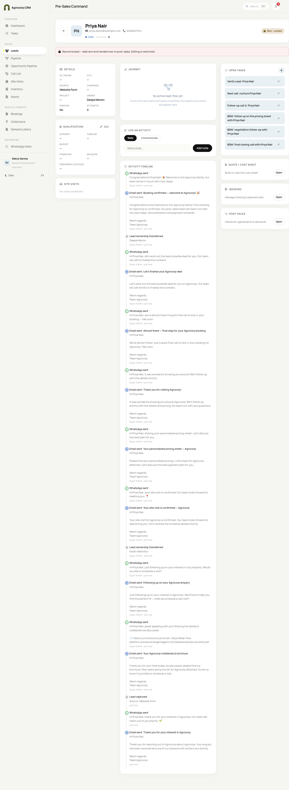
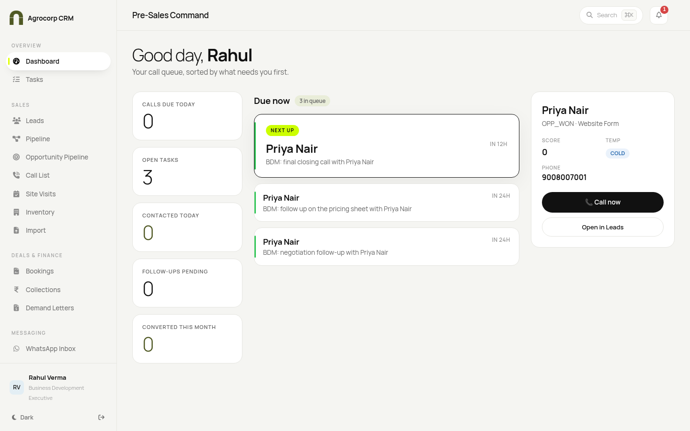
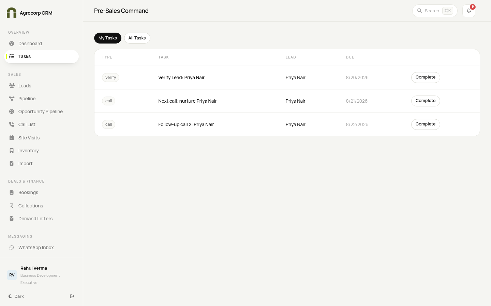

Live walk-through of a single lead (Priya Nair) through the full 5-stage Operating-Guidebook flow, captured from the running preview environment. Every message, task and ownership change below was created by the actual system — not mock-ups.
Lead: Priya NairPhone: 90080 07001Source: Website FormResult: Won & Locked
Stage 4–5Won → ownership auto-moved to Deepa Menon (CRM Head / Post-Sales), record locked
Entry point — the website enquiry form
Priya submits the hosted form at /enquiry. On submit the CRM creates the lead (source “Website Form”), round-robins it to the least-busy BDE, and fires the Stage-1 acknowledgement.

Stage 1 — Lead Entry (owner: BDE Rahul Verma · status NOT CONTACTED)
📱 WhatsApp — lead_acknowledgement: “Hi Priya Nair, thank you for your interest in Agrocorp…”
✉️ Email — “Thank you for your interest in Agrocorp”
✅ Task — “Verify Lead: Priya Nair” (assigned to Rahul)
🔔 Notification — center-screen “New Lead” popup + bell badge for the BDE
Below: the BDE opens Priya’s record — note the Activity Timeline already shows the WhatsApp + email, and the Open Tasks panel shows the verify task.

The BDE’s dashboard & the new-lead popup

Stage 2 — Qualification (owner: BDE Rahul Verma)
→ Contacted
📱 lead_collateral — brochure & price-list message (collateral link auto-appended)
✉️ “Your Agrocorp collaterals & brochure”
✅ “Next call: nurture Priya Nair” · due +24h · medium

→ Follow-Up 1
📱 lead_followup — with quick-reply buttons [Book a visit] / [Not interested]
✉️ “Following up on your Agrocorp enquiry”
✅ “Follow-up call 2: Priya Nair” · due +48h

Stage 3 — Meeting & Booking (ownership hands to BDM)
→ Converted to Opportunity — ownership auto-moves BDE → BDM
📱 site_visit_confirmation — “your site visit is confirmed!”
✉️ “Your site visit is confirmed — Agrocorp”
👥 Ownership transferred to Karan Malhotra (BDM); lead enters the BDM opportunity pipeline; every-2-day engagement nudges begin.

→ Pricing Sheet (BDM)
📱 pricing_sheet ✉️ “Your personalised pricing sheet — Agrocorp” ✅ “BDM: follow up on the pricing sheet” (high)
📱 booking_confirmation — “Congratulations Priya Nair! 🎉 Welcome to the Agrocorp family.”
✉️ “Booking confirmed — welcome to Agrocorp! 🎉”
👥 Ownership transferred to Deepa Menon (CRM Head / Post-Sales).
🔒 Won Lock — the record is frozen (“Won · Locked”); status & pipeline can no longer be changed, even by an admin.
Below: the complete activity timeline on the locked record — the full sequence of WhatsApp + emails + both ownership transfers, and the “Record locked” banner.

Stage 5 — Customer & the Accounts dashboard
Once Won, the deal appears for Post-Sales / Accounts. The Accounts login lands on a finance-only dashboard (Received, Collections Due, Overdue, GST Billed + Recent Receipts). All amounts render in Indian format (₹1,00,000).

Tasks & reminders created along the journey (BDE view)

The actual records this one lead generated
WhatsApp messages (9)
#
Stage / trigger
Template
Message
1
Not Contacted
lead_acknowledgement
Hi Priya Nair, thank you for your interest in Agrocorp. Our team will reach out to you shortly.
2
Contacted
lead_collateral
Great speaking with you! Sharing the details & collaterals (brochure/price-list link appended).
3
Follow-Up 1
lead_followup
Just following up on your interest — would you like to schedule a visit? (+ buttons)
4
Converted
site_visit_confirmation
Your site visit is confirmed! Our team looks forward to meeting you.
5
Site Visit Positive
post_visit_followup
It was wonderful showing you around! We’ll follow up with the details shortly.
6
Pricing Sheet
pricing_sheet
Sharing your personalised pricing sheet. Let’s discuss the best plan.
7
Negotiation
negotiation
Let’s work out the best possible deal for you. Our team will call to finalise.
8
Final Call
final_call
We’re almost there! A quick final call to lock in your booking.
9
Won
booking_confirmation
Congratulations Priya Nair! Welcome to the Agrocorp family.
Emails (9)
#
Subject
1
Thank you for your interest in Agrocorp
2
Your Agrocorp collaterals & brochure
3
Following up on your Agrocorp enquiry
4
Your site visit is confirmed — Agrocorp
5
Thank you for visiting Agrocorp
6
Your personalised pricing sheet — Agrocorp
7
Let’s finalise your Agrocorp deal
8
Almost there — final step for your Agrocorp booking
9
Booking confirmed — welcome to Agrocorp! 🎉
Tasks & reminders (6)
Task
Priority
Due
Assigned to
Verify Lead: Priya Nair
High
same day
Rahul Verma (BDE)
Next call: nurture Priya Nair
Medium
+24h
Rahul Verma (BDE)
Follow-up call 2: Priya Nair
Medium
+48h
Rahul Verma (BDE)
BDM: follow up on the pricing sheet with Priya Nair
High
+24h
Karan Malhotra (BDM)
BDM: negotiation follow-up with Priya Nair
High
+24h
Karan Malhotra (BDM)
BDM: final closing call with Priya Nair
High
+12h
Karan Malhotra (BDM)
Ownership timeline
When
Event
New owner
Lead created
Round-robin assignment
Rahul Verma — BDE (Pre-Sales)
Converted to Opportunity
Auto hand-off Pre-Sales → Sales
Karan Malhotra — BDM (Closer)
Won
Auto hand-off Sales → Post-Sales + record locked
Deepa Menon — CRM Head (Post-Sales)
Important — what is live vs mock in this dry-run. This was captured on the preview environment where WhatsApp & email run in mock mode (messages are recorded & shown in the timeline but not delivered to a real phone/inbox). On Hostinger, once your 23 approved WhatsApp templates are synced, the exact same triggers send the real approved templates. Emails are already real templates (no Meta approval needed).